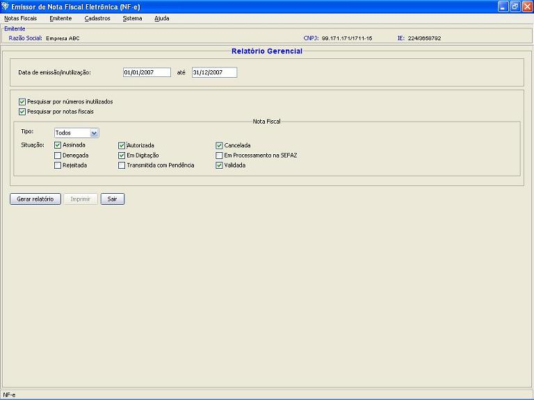
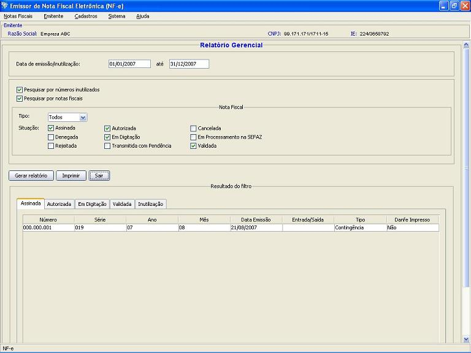
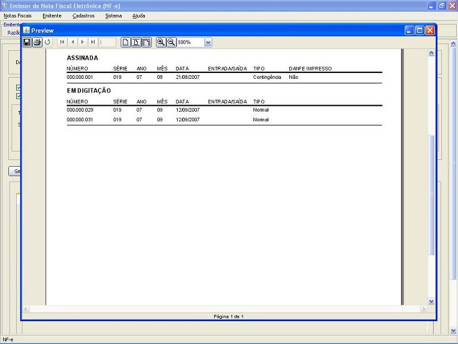

Software Emissor NF-e
Relatório Gerencial
Com o objetivo de consolidar as informações
relevantes sobre NF-e's no período, o relatório
gerencial apresenta, de forma resumida, as Notas Fiscais, suas
situações e seus valores principais. Pode trazer
também as Inutilizações realizadas no
período, caso o usuário assim escolha.
Pré-condição
-Um
emitente
deverá estar previamente iniciado.
- Acessar o menu: Sistema
-> Relatório Gerecial
- Preencher a data
inicial e final para busca das NF-e's ou
inutilizações.
- Selecionar se o
Relatório deverá trazer as
inutilizações, as Notas Fiscais ou ambas.
- Caso seja
selecionado para buscar as NF-e's,
selecionar o tipo (Normal, Contingência ou ambas) e as
situações (escolha e uma ou mais).
- Clicar em Gerar Relatório
- Ao final, será
apresentado o resultado das NF-e's. Cada situação
será apresentada em uma aba. Caso a
inutilização foi selecionada, esta
virá em uma aba de Inutilizações.
- Clicar em Imprimir para
visualizar o Relatório para impressão.
Preencher com os dados no filtro:

Retornará o
consolidado daquele período:

Pode-se imprimir o
relatório gerado com a opção Imprimir:
